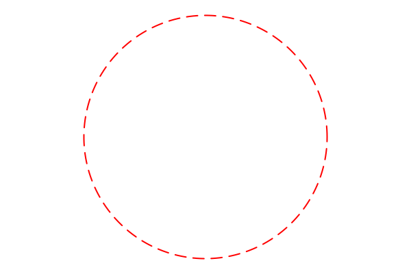

SimpleDrawingObjects
This is a companion module to SimpleDrawing. Its purpose is to simplify the drawing of basic shapes.
Overview
This module defines some basic shapes (such as Circle) that can be endowed with attributes (such as line thickness and color). The underlying visualization of these objects is provided by Plots.
The general workflow is to (1) create a shape, (2) specify attributes for that shape, and (3) visualize it using the draw function.
For example:
using SimpleDrawingObjects, SimpleDrawing
C = Circle(2-im, 3) # circle centered at (2,-1) with radius 3
set_linecolor!(C, :red)
set_linewidth!(C, 2)
set_linestyle!(C, :dash)
newdraw() # erases the drawing window (from SimpleDrawing)
draw(C) # draws the circle
finish() # remove any axes, legends, etc. and set the aspect ratio to 1Here is the result:

Note that the center of the circle is specified as a complex number. Alternatively, we could have used Circle(2,-1,3). Note that Circle(2,3) is understood as Circle(2+0im,3) and would create a circle centered at (2,0).
List of supported objects
- Line Segments
SegmentArrow(aSegmentwith an arrow at one end)
- Polygons
Polygon,FilledPolygonRectangle,FilledRectangle(for axis-parallel rectangles)
- Circles
Circle,FilledCircleArc(arc of a circle)Ellipse,FilledEllipse
- Spline Curves
OpenCurveClosedCurveFilledClosedCurve
- Points
Point
More information on each of these is provided below.
Drawing objects
The draw function causes the object to be drawn on the screen.
The draw function may be applied to a list (vector) of objects, in which case the objects in the list are drawn in the order presented.
Attributes
Each SimpleDrawingObject has attributes that affect how it is drawn. The following methods are provided for setting object attributes:
set_linecolor!(o, c)assigns the line colorctoo. Default::blackset_linewidth!(o, w)sets the line thickness of the lines drawn to bew. Default:1.set_linestyle!(o, style)sets the line style ofotostyle. Default:solid.
These functions pertain only to Points:
set_pointsize!(p, sz)pertains only toPoints and sets the size of thePoint. Default:2.set_pointcolor!(p, col)pertains only toPoints and sets the color of thePoint. Defaut::black.
These functions pertain only to filled objects:
set_fillcolor!(o, col)sets the interior color tocol. Default::white.set_fillalpha!(o, α)sets the transparency of the fill toα. Note thatα = 0is completely transparent andα = 1is completely opaque. Default:1.
More generally, use set_attribute!(o, attr, val) to set o's attribute attr to the value val. Use with caution.
Use reset_attributes!(o) to return o to its "factory default" attributes.
The function get_attributes(o) returns a view into o's attribute dictionary which can then be directly manipulated (if you dare).
More information on object attributes can be found in the Plots documentation.
Line Segments
Create a new line segment using one of these:
Segment(a, b)whereaandbare complex numbers.Segment(x, y, xx, yy)where the arguments are real numbers; this creates a segment from(x,y)to(xx,yy).Arrow(a, b)creates a line segment fromatobwith an arrowhead atb. This is equivalent to:s = Segment(a, b)set_attribute!(s, :arrow, true)
Polygons
Polygons are created from a list of complex numbers. The following are equivalent
Polygon([1-2im, 3+im, 4, -1-im])Polygon(1-2im, 3+im, 4, -1-im)Polygon([1,3,4,-1], [-2,1,0,-1])
The convenience function Rectangle creates an axis-parallel rectangle.
Rectangle(a, b)creates a rectangle with opposite corners ataandb(as complex numbers).Rectangle(x, y, xx, yy)creates a rectangle with opposite corners(x,y)and(xx,yy).
The interior of a Polygon is blank. To create a filled-in polygon, use FilledPolygon (as well as FilledRectangle).
Circular Shapes
Circles
Circles are created from a center and a radius:
Circle(z, r)is the circle centered at (complex)zwith radiusr.Circle(x, y, r)is the circle centered at(x,y)with radiusr.
A FilledCircle is a circle whose interior has a color. Like circles, create with one of these:
FilledCircle(z, r)FilledCircle(x, y, r)
The symbols Disc and Disk are synonyms for FilledCircle.
Arcs
Arcs of circles are created with Arc(ctr, rad, t1, t2, t3) where:
ctris (complex) the center of the circle,radis the radius of the circle,t1is the starting angle for the arc,t2is an angle for a point inside the arc, andt3is the ending angle for the arc.
We require the intermediante angle t2 because simply specifying the end points of the arc does not determine which piece of the circle we are considering.
The center can also be specified as two real numbers: Arc(x, y, rad, t1, t2, t3).
Ellipses
Create an ellipse using Ellipse(z, rx, ry) where z is the center (complex) and rx and ry are the horizontal and vertical radii. Note that only axis-parallel ellipses can be created. Alternatively, use Ellipse(x, y, rx, ry) for an ellipse centered at (x, y).
For an ellipse with a filled-in interior, use FilledEllipse.
Spline Curves
The functions ClosedCurve and OpenCurve create curves from a list of points (just like Polygon). The curves are cubic splines through those points. The following are all equivalent:
ClosedCurve([1-2im, 3+im, 4, -1-im])CloseCurve(1-2im, 3+im, 4, -1-im)ClosedCuve([1,3,4,-1], [-2,1,0,-1])
We also have FilledClosedCurve for a closed curve whose interior is colored.
Points
Points in the plane are created with Point(z) or Point(x,y). A Point is rendered as a small dot. These two functions determine the appearance of points:
set_pointsize!(p, sz = 2)sets the size of the point.set_pointcolor!(p, col = :black)sets the color of the point.
To illustrate a point whose interior color is different from its boundary, use a FilledCircle.